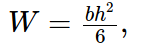
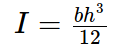

Итак, мы рассчитаем пример из реальной практики. Высота щитов у нас будет 2.2 м.
Расчет крепления разобьем на 3 подзадачи.
- Расчет непосредственно досок палубы.
- Расчет вертикальных ребер жесткости
- Расчет схваток.
Расчет досок палубы
Максимальное давление действует на самую нижнюю доску. Для нее и проведем расчет. При высоте h = 2.2м и ширине доски 10см (участок, с которого собираются нагрузки), мы получим значение распределенной нагрузки:
q = 2,2 * 2,5 * 0,1 = 0.55 тонн на погонный метр.
В качестве материалов примем доски из сосны 2-го сорта (первый - слишком жирно, третий - ненадежно из-за обилия сучков). Расчетные характеристики впредь будем брать из СП 64.13330.2011 "Деревянные конструкции". В связи с тем, что СП в свободном доступе, не вижу необходимости публиковать его еще и здесь.
Небольшое отступление. Для быстрого поиска слов в тексте во многих документах используется сочетание клавиш CTRL+F. Для масштабирования изображений и текста CTRL + "колесико мыши"
Напомню условие прочности для изгибаемого элемента:
где M - максимальный изгибающий момент [кН*м],
W - момент сопротивления сечения [см3]
Rи - расчетное сопротивление изгибу.
Расчетное сопротивление изгибу вдоль волокон для данной древесины (сосна 2-го сорта)
Rи = 13 МПа = 1,3 кН/см2 (по табл. 3).
Для других пород нужно наше сопротивление умножать на коэффициенты, указанные в таблице 5.
Момент сопротивления сечения прямоугольного элемента:

где b - ширина элемента (у нас 10 см),
h - высота элемента (у нас 2.5 см).
Итого у нас W = 10 * 2.5 2 / 6 = 10.417 см3
Отсюда максимальный изгибающий момент:
 Для нашей многострадальной доски Mmax = 1.3кН/см 2 * 10.417см 3 = 13.54кН*см = 0.1354 кН*м.
Для нашей многострадальной доски Mmax = 1.3кН/см 2 * 10.417см 3 = 13.54кН*см = 0.1354 кН*м.
Теперь осталось посчитать максимальный изгибающий момент, который мы можем ожидать в реальности. Сама доска у нас - многопролетная статически неопределимая балка на шарнирных опорах, где опоры - ребра жесткости.
Сразу поясню, что в схеме "5.39" - ни что иное, как наши 0.55 т/м, только переведенные в кН/м. Расстояние между ребрами (неподвижными опорами) мы определили предварительно. Для предварительной оценки расстояния между ребрами я обычно использую формулу: Полученная длина l = sqrt(8 * 1354 / 5.39) = 44см (sqrt - квадратный корень).
"Откуда он это взял, что вообще тут творится??"- можете подумать вы. Сейчас станет ясно.
Дело в том, что максимальный изгибающий момент при одинаковом расстоянии между опорами (ребрами) возникает в статически определимой балке с шарнирными опорами по краям (см. рис.3). При добавлении консолей по краям (длина их не более половины lmax), расстояние между опорами можно смело увеличивать (рис.4).
Таким образом, для экономии материала и снижения трудозатрат, мы закладываем консольные участки по краям балки, затем разбиваем оставшийся пролет еще на несколько участков.
Следуя данной логике, мы и получили расчетную схему, изображенную на рисунке 2. Теперь идем в раздел "Проги" и рассчитываем то, что у нас получилось. Теоретически, там должно быть все понятно и интуитивно... Думаю, не запутаетесь. В крайнем случае, начните заново, обновив страницу (обычно клавиша F5). Построим сразу эпюры моментов, поперечных сил и прогибов, выбрав соответствующие флажки. Для определения прогибов в мм снова обратимся к СП. Согласно пункту 5.3, модуль упругости древесины вдоль волокон E = 10000 МПа.
Момент инерции высчитывается по формуле:

Итак, I = 10 * 2.53/12 = 13.02 см4.
Введем только что вычисленные характеристики балки в расчет и получим:
Мы видим, что максимальный момент у нас 0.1078 кН*м, что меньше, чем 0.1354 кН*м. Максимальная сила приложена ко второй слева (или справа) опоре и равна 2.545 кН. Данная величина могла бы стать отправной точкой для расчета ребер, точнее для подбора высот расположения схваток. Вы также можете "поиграться", перемещая точки опор, для того, чтобы просмотреть, как вообще меняются усилия и прогибы.
Для монтажа ребер и схваток вполне нормальной точностью считается точность плюс/минус 5 см. При этом немного меняется расчетная схема, а следовательно и результирующие усилия. К примеру, если сдвинуть влево первую опору на 5 см, то максимальное усилие, воздействующее на ребро увеличится до 2.906 кН, что на 14% больше, чем 2.545 кН. Я призываю не слишком обращать на это внимание, т.к. коэффициенты запасов прочности, заложенные в наших СНИПах вполне достаточные, чтобы не переживать по этому поводу. Кроме того, я не знаю, возможно ли вообще получить на практике величину давления бетона, равную гидростатическому. Необходимо, однако, обратить внимание, на каких участках отклонение крайне нежелательно. В нашем случае (да и в большинстве других) лучше не допускать увеличения длины консольной части.
В итоге ребра рассчитаем на максимальную нагрузку понизу равную 2.545кН. Базой для расчета схваток нам послужат соотношения опорных реакций ребер. То, что в нашей первой расчетной схеме являлось опорой станет внешней нагрузкой. Однако, об этом потом.
Далее... Назад...